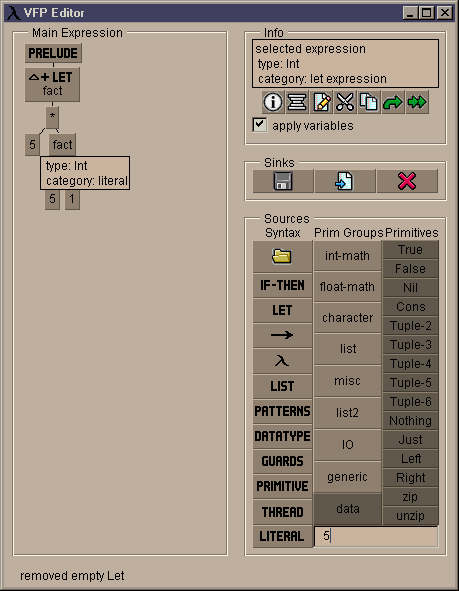
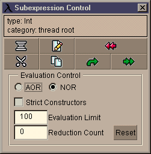

Interface Overview
Main Window
The VFPE interface is divided into three main parts. On the left is
an expression panel containing the main program. At the root of
the expression is a prelude node which represents the library of
built-in functions.
The large panel to the right is the pallet. It contains
controls for "picking up" new subexpressions from which programs
are constructed, and a few controls for "dropping" subexpressions
to achive certain effects.
Below is an information panel, where messages about the operation
of the editor are displayed.

General Operation
Visual functional programs are represented as syntax trees. The basic
unit of editing as a functional subexpression, which can a simple
literal value or a complex expression containing its own local definitions.
For further information on the various syntactic catagories of subexpressions,
see here.
Programs are constructed via a "drag and drop" interface. Functional
subexpressions can be "grabbed" from a number of sources, such as
the source controls on the pallet, or via operations triggered from
a subexpression control panels (see below). When a subexpression has
been grabbed, the cursor changes to indicate the fact.
A grabbed subexpression
can be "dropped" onto a placeholder node (the tree nodes with question
marks on their faces) to build an expression, or onto the pallet sink
controls to delete, save or output a subexpression.
Tool Tip Information
The nodes in expression trees have a "tool tip" or "flyover" information
feature. If the cursor is positioned over a node and remains still
for a short period, a window will pop up which contains information
about the syntactic catagory of the node, its type, and any programmer
supplied comment on the node.
Subexpression Control Panels
Control-clicking (ie holding down the control key whilst clicking with
the mouse) on a node will summon a subexpression control panel for
the node. The contents of the panel will depend upon the syntactic
catagory of the node. Some items such as the comment editing functions,
the redraw function and the close control are common to all, others
such as the cut and copy functions are specific to particular node
catagories.

Saving and Loading
Expressions (and thus programs) can be saved as files. To save an
expression, it is dropped into the "save" control on the pallet; a
file-dialog will be summoned to selected the saved expression file
name. Note that at this time only expressions with no free variables
(ie combinators) can be saved. Expressions are loaded by using
the load control on the pallet, which prompts for the file to load.
contents